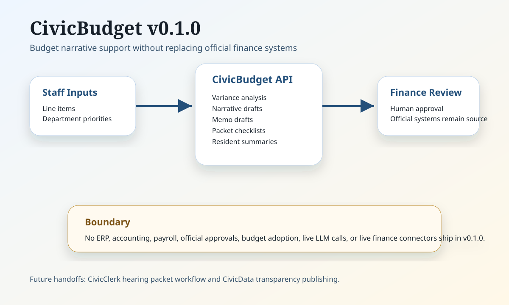

CivicSuite / CivicBudget
v0.1.2 foundation under recovery review
Budget narrative support without replacing the ERP.
CivicBudget v0.1.2 is a published foundation label under suite-wide release-recovery review. It helps municipal finance teams prepare line-item variance notes, department narratives, memos, hearing packet checklists, resident summaries, optional GFOA presentation checklist reviews, and optional database-backed workpaper records.
Available Today
Deterministic budget drafting helpers, optional workpaper persistence with CIVICBUDGET_WORKPAPER_DB_URL, bearer-token retrieval protection with CIVICBUDGET_AUTH_TOKEN_ROLES, FastAPI runtime, tests, release gate, and browser QA evidence.
Human Review
Finance staff approve every number, narrative, public summary, and packet item before use.
Boundary
No ERP, accounting, payroll, budget adoption, official approvals, live LLM calls, or live finance connector runtime is available in v0.1.2.
Recovery evidence: read the release-recovery status.
Architecture

Technical Facts
Version: 0.1.2. Dependency: published CivicCore v0.4.0 release wheel. Repo: CivicSuite/civicbudget.